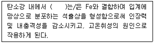
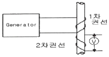
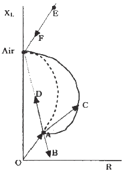

와전류비파괴검사기사 (2020-06-06 기출문제)
1과목: 비파괴검사 개론
1. 동일 조건에서 모세관의 반지름이 2배로 늘어나면 모세관속 액체의 높이는 어떻게 되는가?
- 1/4로 낮아진다.
- 1/2로 낮아진다.
- 2배로 높아진다.
- 4배로 높아진다.
(정답률: 75%)

2. 셀레늄(Selenium) 등의 반도체 뒤에 금속판을 대고 균일한 전하를 준 후 시험체를 투과한 방사선에 노출되면 방사선의 강도에 따라 반도체의 저항이 작아지고 전하가 이동하여 방전하게 되는데, 여기에 반대 전하를 도포하면 육안으로 확인 가능한 영상이 형성되며 이에 적절한 수지를 도포함으로써 영상을 형성할 수 있다. 이 원리를 이용하는 방법은?
- 건식 방사선 투과검사법(Xeroradiography)
- 전자 방사선 투과검사법(Electron radiography)
- 자동 방사선 투과검사법(Autoradiography)
- 순간 방사선 투과검사법(Flash radiograraphy)
(정답률: 54%)
3. 결함의 유해성에 관한 설명 중 옳은 것은?
- 결함을 가지고 있는 구조물의 강도가 저하하는 양상은 그 결함의 형상과 방향에 따라 다르다.
- 곡면이 있는 결함은 주로 단면적의 감소에 기인하여 강도를 증가시킨다.
- 가늘고 긴 결함은 단면적의 감소 이외에 결함부의 지시 길이에 기인하여 강도를 증가시킨다.
- 표면결함과 내부결함에서 동일종류, 동일치수의 결함이면 내부결함의 경우가 표면결함보다 유해하다.
(정답률: 43%)
4. 비파괴시험 기술자의 임무라 볼 수 없는 것은?
- 시험결과의 정확한 판정
- 제조공정의 철저한 관리
- 제품의 품질보증에 대한 책임
- 시험기술 향상을 위해 꾸준한 노력
(정답률: 74%)
5. 다음 중 발(기)포누설검사법(Bubble Test)에서 소크시간(soak time)에 해당되는 것은?
- 검사용액을 혼합하고 적용하는데 소요되는 시간
- 검사용액을 적용한 후 관찰할 때까지 소요되는 시간
- 가압의 완료 시점과 용액의 적용시점 사이의 시간
- 시험에 소요되는 총 시간
(정답률: 47%)
6. 다음 합금 중 형상기억 효과가 있는 것은?
- Mn-B
- Co-W
- Cr-Co
- Ti-Ni
(정답률: 71%)
7. SM45C의 탄소 함유량은 약 몇 %인가?
- 0.045
- 0.12
- 0.45
- 1.2
(정답률: 67%)
8. 실루민을 개량처리하는 이유로 옳은 것은?
- 공정점 부근의 주조조직으로 나타나는 Si 결정을 미세화 시키기 위해
- 공정점 부근의 주조조직으로 나타나는 Al 결정을 미세화 시키기 위해
- 공정점 부근의 주조조직으로 나타나는 Zn 결정을 미세화 시키기 위해
- 공정점 부근의 주조조직으로 나타나는 Sn 결정을 미세화 시키기 위해
(정답률: 60%)
9. 순철의 냉각에서 A3 변태에 대한 설명으로 옳은 것은?
- 온도는 약 1410℃이다.
- 부피가 감소하는 변화이다.
- 결정구조의 변화를 수반한다.
- 공정 반응이다.
(정답률: 46%)
10. 금속의 인장시험 시 측정되는 다음 항목들 중 가장 높은 응력 값을 나타내는 것은?
- 인장 강도
- 항복 강도
- 탄성 강도
- 피로 강도
(정답률: 72%)
11. 재료의 정적 파괴응력보다 작은 응력을 장시간 동안 반복적으로 받는 경우에 파괴되는 현상은?
- 마모
- 피로
- 크리프
- 샤르피
(정답률: 73%)
12. 다음 ()안에 들어갈 원소는?

- Cu
- S
- Mn
- Si
(정답률: 60%)
13. 알루미늄 합금의 질별 기호가 잘못 찍지어진 것은?
- O:어닐링한 것
- H:가공 경화한 것
- W:용체화 처리한 것
- F:용체화 처리 후 자연시효한 것
(정답률: 67%)
14. 다음 중 주석에 대한 설명으로 틀린 것은?
- 화학기호는 Sn이다.
- 상온가공경화가 없으므로 소성가공이 쉽다.
- 비중은 약 10.3이고, 융점은 약 670℃정도이다.
- 무독성이므로 의약품, 식품 등의 포장용, 튜브에 사용된다.
(정답률: 54%)
15. Mg 합금에 대한 설명으로 틀린 것은?
- 소성가공성이 높아 상온변형이 쉽다.
- 비강도가 커서 항공기나 자동차 재료 등으로 사용된다.
- 감쇠능이 커서 소음방지 재료로 우수하다.
- 구상 흑연주철의 첨가제로 사용된다.
(정답률: 47%)
16. 저수소계 피복 아크 용접봉의 건조온도 및 건조시간으로 다음 중 가장 적합한 것은?
- 100~150℃, 30분
- 200~300℃, 1시간
- 150~200℃, 2시간
- 300~350℃, 1~2시간
(정답률: 59%)
17. 가스 금속 아크 용접에서 용융 금속의 이동 형태가 아닌 것은?
- 단락 이행
- 입상 이행
- 롤러 이행
- 스프레이 이행
(정답률: 56%)
18. 다음 중 노치취성 시험방법이 아닌 것은?
- 슈나트 시험
- 코머렐 시험
- 샤르피 시험
- 카안인열 시험
(정답률: 31%)
19. 용접 작업으로 인하여 발생하는 잔류 응력을 제거하는 방법으로 틀린 것은?
- 솔더링
- 피닝법
- 국부 풀림법
- 저온 응력 완화법
(정답률: 54%)
20. 아크 용접기의 1차측 입력이 20kVA인 경우 가장 적합한 퓨즈의 용량은? (단, 이 용접기의 전원전압은 200V이다.)
- 10A
- 50A
- 100A
- 200A
(정답률: 65%)
2과목: 와전류탐상검사 원리
21. 시간축 직선성이나 타원형 장치로 와전류탐상시 상호 비교형 코일에 들어 있는 대비시험편과 검사체의 상태가 서로 같을 경우 CRT 스크린에 나타나는 지시의 형태는?
- 스크린 중앙부에 수직선이 나타난다.
- 스크린 중앙부에 수평선이 나타난다.
- 시간전압과 같은 위상의 정현파가 나타난다.
- 시간전압과 90°위상이 어긋난 정현파가 나타난다.
(정답률: 74%)
22. 코일 내에 있는 강자성체를 자화할 때 코일로 흐르는 전류를 증가시키면 어떤 현상이 발생되는가?
- 자속밀도가 계속 증가한다.
- 자속밀도가 전류의 0.2배로 증가한다.
- 자속밀도가 증가하다 포화점에 이른다.
- 자속밀도가 이차함수 곡선을 이룬다.
(정답률: 73%)
23. 탐촉자 코일의 유도리액턴스는 코일의 임피던스량에 영향을 미치는데 가장 직접적으로 영향을 미치는 인자들은?
- 전압, 코일 인덕턴스, 코일 저항
- 코일 저항 만
- 코일 저항과 인덕턴스
- 주파수와 코일 인덕턴스
(정답률: 7%)
24. 다음 중 와전류탐상시험에 있어 검출지시에 가장 큰 영향을 주는 인자로서 옳은 것은?
- 시험품의 연전도율
- 시험품의 밀도
- 코일과 시험품과의 거리
- 시험품의 경도
(정답률: 72%)
25. 와전류탐상 코일의 임피던스 변화에 따른 영향이 가장 적은 것은?
- 전기전도도
- 투자율
- 치수변화
- 부품온도
(정답률: 65%)
26. 구리의 비저항이 1.7×10-6Ωㆍcm이고, 아연의 비저항이 5.9×10-6Ωㆍcm이면 아연의 전도도는 약 몇 % IACS인가?
- 29
- 35
- 59
- 76
(정답률: 59%)
27. 와전류탐상시험에서 충진율이 일정해야 하는 이유는?
- 코일과 시험체 사이의 아크 발생을 피하기 위하여
- 일정한 AC 여기회로 전류에 부하를 최소로 하기 위하여
- 시험기의 출력신호 변화를 최소로 하기 위하여
- 주파수를 변화시키지 않게 하기 위하여
(정답률: 63%)
28. 교류가 흐르는 코일 내부에 강자성체인 금속시험체를 놓았다. 시험체 내부에서의 전자기장에 관한 다음 설명 중 옳은 것은?
- 시간에 따라 변화하는 자기장만 유도된다.
- 시간에 따라 변화하는 자기장과 일정한 전기장이 함께 유도된다.
- 시간에 따라 변화하는 전기장과 일정한 자기장이 함께 유도된다.
- 시간에 따라 모두 변화하는 전기장과 자기장이 함께 유도된다.
(정답률: 47%)
29. 와전류탐상시험장치 중 아날로그 장비의 안정화를 위한 통상적인 예비 운전시간은?
- 전원 켜는 즉시
- 20~30분
- 1시간
- 4시간
(정답률: 56%)
30. 와전류탐상시험에서 검사코일의 임피던스는 무엇들의 벡터합인가?
- 리액턴스와 저항
- 인덕턴스와 저항
- 인덕턴스와 리액턴스
- 교류 주파수와 저항
(정답률: 47%)
31. 와전류탐상시험에서 시험 코일의 임피던스 변화의 검출 방법에 따른 분류방법에 해당되지 않는 것은?
- 임피던스 시험
- 위상분석 시험
- 변조분석 시험
- 펄스-에코 시험
(정답률: 75%)
32. 그림에서 1차 권선에 흐르는 교류는 자기장을 형성하고 막대기에 와전류 흐름을 일으킨다. 이 때 2차 권선에 형성되는 전압 크기를 결정하는 인자가 아닌 것은?

- 막대기의 와전류
- 1차 권선
- 발진기
- 전압기
(정답률: 57%)
33. 와류탐상시험의 표준시험편을 결정할 때 가장 중요하지 않은 사항은?
- 표준시험편은 시험체와 동일한 크기 및 형상이어야 한다.
- 표준시험편은 시험체와 동일한 열처리 과정을 거친 것이라야 한다.
- 표준시험편은 부식방지를 위해 표면처리된 것이라야 한다.
- 표준시험편의 표면 상태는 시험편과 동일한 상태라야 한다.
(정답률: 74%)
34. 와류탐상에서 신호의 위상을 변화시키는 것은?
- 시험코일의 유도 리액턴스와 저항의 비의 변화
- 장치의 감도설정의 변화
- 고주파 증폭기의 이득의 변화
- 리젝션(rejection)
(정답률: 80%)
35. 와전류탐상검사 시 이론적인 최대 검사 속도는 다음 중 어느 것에 의해 결정되는가?
- 자속 밀도
- 검사비 주파수
- 이동 장치
- 검사 코일 임피던스
(정답률: 60%)
36. 전열관의 와전류탐상시험에서 저주파수를 이용한 진폭 방식으로 결함 신호를 나타낼 때의 특징으로 올바른 것은?
- 검사비가 저렴하고 검사속도가 빠르다.
- 검사비가 고가이고 검사속도가 느리다.
- 의사신호를 제거하고 결함깊이 추정이 가능하다.
- 결함 판별이 정확하고 결함검출 능력이 높다.
(정답률: 43%)
37. 포용코일(Encircling Coil)을 사용하여 직선형 튜브재를 검사할 때 다음 중 어느 것이 가장 좋은 Fill-Factor를 나타내는가?
- 0.25
- 0.50
- 0.95
- 1.75
(정답률: 53%)
38. 다음 주파수 중 와전류 침투깊이가 가장 큰 것은? (단, 다른 조건은 동일하다.)
- 100Hz
- 10kHz
- 1MHz
- 10MHz
(정답률: 65%)
39. 시험체에 결함이 존재하면 와전류의 흐름이 변하는데 직접적인 이유는?
- 충진율의 변화
- 전도도의 변화
- 끝부분 효과의 변화
- 리프트 오프의 변화
(정답률: 17%)
40. 와전류탐상시험으로 검사할 때 다음 중 최대감도를 나타내는 경우는?
- fill-factor가 가능한 한 낮을 때
- fill-factor가 0.5일 때
- fill-factor가 가능한 한 높을 때
- 코일이 가능한 한 크게 만들어 졌을 때
(정답률: 29%)
3과목: 와전류탐상검사 시험
41. 재료 전도도 감소의 다른 표현은?
- 비저항 감소
- 비저항 증가
- 투자율 감소
- 투자율 증가
(정답률: 29%)
42. 다음 중 내삽형 코일을 탐상코일로 사용하는 시험은?
- 열교환기용 전열관내의 부식탐상시험
- 탄소강 선재의 열간 탐상시험
- 알루미늄 합금판의 도전율 측정
- 필렛 또는 강판의 탐상시험
(정답률: 47%)
43. 와전류의 침투깊이와 관련 없는 인자는?
- 전도율
- 원자번호
- 주파수
- 투자율
(정답률: 65%)
44. 내삽형 탐촉자를 사용한 관(Tube)의 검사에서 보정표준시험관(대비시험관)의 100% 관통인공결함신호를 40°에 맞추었더니 잡음신호(또는 탐촉자 흔들림 신호)는 수평이었고 60% 외면 인공결함 신호의 위상각은 115°로 측정되었다. 20% 내면 인공결함 신호의 위상각은 어떻게 되겠는가?
- 115° 보다 크다.
- 40°에서 115° 사이이다.
- 0°에서 40°사이이다.
- 0°이다.
(정답률: 62%)
45. 와전류탐상시험은 어떤 에너지를 이용하는가?
- 열에너지
- 음향에너지
- 광에너지
- 자기장에너지
(정답률: 54%)
46. 배관의 와전류탐상검사에서 결함이 8자형 신호로 표시될 때 결함의 깊이에 해당하는 8자형 신호의 값은?
- 8자형 신호의 X축 방향의 길이
- 8자형 신호의 Y축 방향의 길이
- 8자형 신호의 기울어진 각도
- 8자형 신호의 벌어진 정도
(정답률: 59%)
47. 관통형 코일을 사용하여 와전류탐상검사를 할 경우 전도체에 유도되는 와전류의 성질로 맞는 것은?
- 유도된 와전류의 크기가 코일에서 흘려주는 전류크기보다 크다.
- 유도된 와전류는 검사체의 자기투자율에 변화에 영향을 받는다.
- 유도된 와전류로 인하여 전도체에서 열이 발생하지는 않는다.
- 유도된 와전류는 코일에서 발생한 자장 밀도와 관련이 없다.
(정답률: 58%)
48. 외경이 17mm인 환봉에 대하여 관통코일을 이용해 와전류탐상시험을 수행할 때, 시험코일권선의 내경이 20mm, 외경이 23mm인 경우 충전(진)율은 약 얼마인가?
- 52%
- 63%
- 65%
- 70%
(정답률: 31%)
49. 그림의 임피던스 평면상에서 벡터 OA는 평면형 탐촉자가 매우 두꺼운 알루미늄 판 위에 놓였을 때의 코일 임피던스를 나타낸다. 벡터 AC는 무엇을 나타내는가?

- 알루미늄판의 전도도가 감소했다.
- 탐촉자와 알루미늄판의 간격이 증가했다.
- 알루미늄판의 투자율이 증가했다.
- 시험주파수가 증가했다.
(정답률: 29%)
50. 와전류탐상을 수행하는데 발생하는 가장 큰 어려움은?
- 정확한 전도도의 측정이 불가하다.
- 비교적 낮은 주파수를 사용하므로 검사속도를 빠르게 할 수 없다.
- 신호를 발생시키는 인자의 수가 많아서 지시신호의 평가가 어렵다.
- 작은 결함을 검출할 수 없다.
(정답률: 39%)
51. 와전류 탐상코일의 임피던스에 관한 설명으로 옳은 것은?
- 코일의 감은 수에 비례한다.
- 코일의 감은 수의 제곱에 비례한다.
- 코일의 감은 수에 반비례한다.
- 코일의 감은 수의 제곱에 반비례한다.
(정답률: 24%)
52. 와전류탐상시험 코일의 임피던스 변화 검출 방법과 기록 장치와의 관계로 틀린 것은?
- 임피던스법=미터기(meter)
- 변조분석법=기록계(chart recorder)
- 타원법 위상 분석법-음극선관(CRT)
- 벡터점 위상 분석법=디지틀전압계(digital voltmeter)
(정답률: 37%)
53. 와전류탐상에서 코일의 자장변화를 일으키는 원인이 아닌 것은?
- 재료의 전도도변화
- 결함에 의한 전도도변화
- 재료의 투자율변화
- 코일의 손 잡이
(정답률: 63%)
54. 관(tube)형태의 강자성체에서 자장의 자속밀도에 가장 큰 영향을 미치는 변수는? (단, 자화력 H는 일정하다고 가정한다.)
- 제품의 표면 거칠기
- 제품의 직경
- 제품의 관두께
- 제품의 길이
(정답률: 65%)
55. 비행기 날개 접촉 부분과 같이 외진 곳의 검사에 적합하며, 자장을 원하는 모양으로 만들기 위해 자성물질을 사용하는 와류검사코일은?
- Bobbin 코일
- Spinning 코일
- 관통코일
- Gap 코일
(정답률: 47%)
56. RFEC(Remote Field Eddy Current, 원격장와전류) 시험법에서 원격장에 놓여진 센서에 영향을 미치는 인자 중 가장 거리가 먼 것은?
- 재료의 탄성 계수 변화
- 투자율 변화
- 전기 전도도 변화
- 날카로운 균열
(정답률: 37%)
57. 변조분석 시험에 쓰이는 리젝션(Rejection)의 역할은?
- 신호 대 잡음의 비율을 감소시킨다.
- 균열이나 다른 결함의 신호를 증폭시킨다.
- 투자율의 변화로부터 전도도의 변화를 분리시킨다.
- 피검물의 투자율과 전도도의 변화에 따른 작은 영향을 제거한다.
(정답률: 31%)
58. 표면형 프로브를 사용하여 판을 검사할 경우 발생하는 Lift-off에 대한 설명으로 틀린 것은?
- Lift-off가 일정하게 유지되지 않으면 S/N비가 낮아진다.
- 전도성 및 비전도성의 도막 두께 측정을 가능하게 하는 이론적 근거이다.
- 검사체의 재질에 따라 Lift-off를 다르게 해주어야 한다.
- Lift-off가 클수록 결함 검출 감도가 떨어진다.
(정답률: 31%)
59. 다음 중 관통형 코일을 이용한 와전류탐상검사에서 적합하지 않은 시험체의 형태는?
- 관
- 선
- 환봉
- 평판
(정답률: 37%)
60. 다음 중 관통형코일로 검사할 수 없는 것은?
- 구리 전선
- 알루미늄 봉
- 스테인레스 강관
- 유리 막대
(정답률: 39%)
4과목: 와전류탐상검사 규격
61. 동 및 동합금관의 와류탐상 시험방법(KS D 0214)에 따른 대비시험편의 드릴 구멍은?
- 관의 길이 방향에 1개
- 관의 길이 방향에 3개
- 관의 수직 방향에 1개
- 관의 수직 방향에 3개
(정답률: 17%)
62. 강의 와류탐상 시험방법(KS D 0232)에서 탐상 장치의 전원 전압의 변동범위는? (단, 환경온도는 0℃~40℃이다.)
- ±5%
- ±10%
- ±15%
- ±20%
(정답률: 34%)
63. 강관 와류탐상검사 방법(KS D 0251)에 따라 강관을 와류탐상 검사한 후 보고서 작성 시 포함되지 않아도 되는 사항은?
- 관의 종류 기호 및 치수
- 탐상장치와 탐상 코일
- 탐상속도와 펄스 반복주파수
- 탐상감도 구분 및 사용 비교 시험편
(정답률: 54%)
64. 강의 와류탐상 시험방법(KS D 02 0232)에서 대비시험편으로 탐상기를 보정한 후 시험체를 탐상한 결과 흠의 확인 시에 얻어진 지시가 의심스러울 때의 조치 내용으로 옳은 것은?
- 불합격시킨다.
- 탐상기를 재보정하여야 한다.
- 대비시험편을 다른 것으로 교환한 후 재보정한다.
- 재시험 또는 다른 방법으로 확인한다.
(정답률: 54%)
65. 강의 와류탐상 시험방법(KS D 0232)에서 원칙적으로 시험 주파수에 해당되는 것은?
- 10MHz
- 2MHz
- 1MHz
- 0.3MHz
(정답률: 40%)
66. 보일러 및 압력 용기에 대한 표준 와전류탐상검사(ASME Sec.V Art.26 SE-243)에서 대비표준시험편에 반지름 방향으로 100% 관통한 드릴 구멍 3개의 인공불연속을 만드는 경우 드릴 구멍의 횡방향 간격은 연속하여 몇 도마다 일정한 간격으로 하여야 하는가?
- 30° 간격
- 60° 간격
- 90° 간격
- 120° 간격
(정답률: 60%)
67. 보일러 및 압력 용기에 대한 표준 와전류탐상검사(ASME Sec.V Art.26 SE-243)의 대비시험편에 관한 설명으로 맞는 것은?
- 대비결함은 횡방향 노치만 허용한다.
- 대비결함은 드릴 구멍만 사용한다.
- 대비결함은 횡방향 노치나 드릴 구멍을 사용한다.
- 대비결함은 검출하고자 하는 결함을 고려하여 임의로 가공하여 사용한다.
(정답률: 47%)
68. 강관의 와류 탐상 검사 방법(KS D 0251)의 대비시험편의 인공홈 가공방법이 아닌 것은?
- 기계가공
- 방전가공
- 아크가우징
- 연삭가공
(정답률: 58%)
69. 보일러 및 압력 용기에 대한 관 제품의 와전류탐상검사(ASME Sec.V Art.8)에 따라 비자성체 열 교환기 탐상 시 아날로그 장비 CRT 선형성의 교정 주기는?
- 1주
- 1개월
- 1년
- 6개월
(정답률: 59%)
70. 강관의 와류 탐상 검사 방법(KS D 0251)에서 대비시험편의 인공 흠의 가공방법을 설명한 것으로 틀린 것은?
- 각 흠은 기계가공 또는 방전가공 한다.
- 각 흠은 관의 바깥면에 관의 축방향으로 가공한다.
- 줄홈은 3각형 줄로 관의 축방향으로 가공한다.
- 드릴 구멍은 관 표면에 대하여 수직으로 뚫는다.
(정답률: 19%)
71. 보일러 및 압력 용기에 대한 관 제품의 와전류탐상검사(ASME Sec.V Art.8)에 따르면 설치된 비자성체 열교환기용 튜브의 시험에서 불연속 깊이는 주로 신호의 무엇으로 평가되는가?
- 주파수
- 허용치수
- 위상각
- 보조주파수
(정답률: 59%)
72. 동 및 동합금관의 와류탐상 시험방법(KS D 0214)에 따라 연속시험 할 때 장치 점검 시간은?
- 적어도 4시간마다
- 적어도 10시간마다
- 적어도 1일마다
- 적어도 4주마다
(정답률: 54%)
73. 보일러 및 압력 용기에 대한 관 제품의 와전류탐상검사(ASME Sec.V Art.8)의 비강자성체 열 교환기 검사 시 자기테이프 기록계의 입력에서 출력까지의 신호 재현성은?
- 30% 이내
- 20% 이내
- 15% 이내
- 5% 이내
(정답률: 16%)
74. 동 및 동합금관의 와류탐상 시험방법(KS D 0214)에 의한 동 및 동합금관을 와류탐상시험할 때 합격으로 판정할 수 있는 것은?
- 대비결함의 신호와 동등 이상의 신호가 검출되지 않은 동관
- 교정마크가 아닌 결함으로 대비결함의 신호보다 동등 이상인 동관
- 비트 절삭 흔적이 아닌 결함으로 대비결함의 신호보다 동등 이상인 동합금관
- 상처가 아닌 결함으로 육안검사 시 해로움이 있는 것으로 판단되는 경우
(정답률: 47%)
75. 보일러 및 압력 용기에 대한 표준 와전류탐상검사(ASME Sec.V Art.26 SE-243)의 대상이 되는 벽 두께에 해당 되는 것은?
- 0.01mm
- 0.1mm
- 1mm
- 10mm
(정답률: 57%)
76. 강의 와류탐상 시험방법(KS D 0232)에서 원형 봉강의 대비 시험편의 각진 홈의 나비는?
- 0.1mm 이하
- 0.5mm 이하
- 1mm 이하
- 5mm 이하
(정답률: 47%)
77. 동 및 동합금관의 와류탐상 시험방법(KS D 0214)에 따라 시험할 때 시험준비에 대한 설명 중 틀린 것은?
- 시험장치에 전기를 통하여 장치가 안정된 다음 조정을 시작해야 한다.
- 이송장치는 시험에 해로운 진동을 주는 일이 없는 것이어야 한다.
- 이음매 없는 니켈 동합금관은 자기포화를 한다.
- 주파수는 대비결함이 검출되도록 1~512kHz 범위 내에서만 선택해야 한다.
(정답률: 27%)
78. 보일러 및 압력 용기에 대한 관 제품의 와전류탐상검사(ASME Sec.V Art.8)에서 비강성체 열 교환기 시험 시 관 벽 손실의 얼마 까지 정확한 관 벽 손실률을 기록될 필요가 없는가?
- 20%
- 25%
- 30%
- 40%
(정답률: 60%)
79. 강의 와류탐상 시험방법(KS D 0232)에 의해 재시험을 수행하여야 할 경우에 해당되지 않는 것은?
- 검사자가 바뀐 경우
- 시험 중 장치의 이상을 발견한 경우
- 잘못하여 조정손잡이 등에 닿아 재조정을 한 경우
- 시험에서 얻어진 지시가 결함에 의한 것인지 의사지시에 의한 것인지 명확하지가 않을 때
(정답률: 62%)
80. 보일러 및 압력용기에 대한 설치된 비자성 열교환기의 와류탐상검사(ASME Sec.V, Art.8)의 비강자성체 열 교환기 검사 시 절차서 요건 중 비필수 변수는?
- 검사원 요건
- 관 재질
- 프로브 종류 및 크기
- 검사 모드
(정답률: 63%)